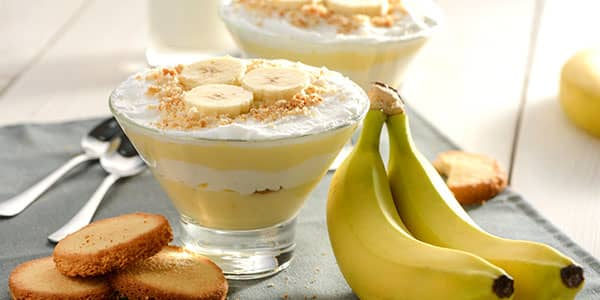
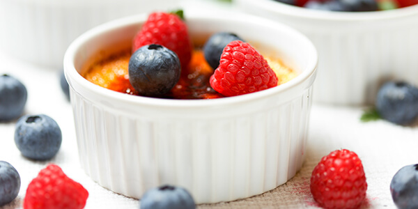

Простий рецепт бананового пудингу з морозивом
Інгредієнти:
-
Банани - 2 шт.
-
Борошно пшеничне - 3 ст. л.
-
Яйця - 2 шт
-
Молоко - 320 мл
-
Печиво пісочне - 70 г
-
Цукор - 80 г
-
Вершкове масло - 1,5 ч. л.
-
Ванільний цукор - 2 г
-
Морозиво - 100 г
Детальніше
Рецепт сирників з ягодами в духовці
Інгредієнти:
-
Ягоди - 100 г
-
Яйця - 2 шт.
-
Сир - 500 г
-
Цукор - 3 ст. ложки
-
Борошно - 4 ст. ложки
-
Розпушувач - 0,5 ч. ложки
-
Ванільний цукор - 10 г
-
Сіль - за смаком
- Сметана - для подачі
Детальніше

Ягідне суфле з кисломолочного та вершкового сиру
Інгредієнти:
-
Кисломолочний сир - 500 г
-
Яйця - 4 шт.
-
Сир рикота - 250 г
-
Свіжі ягоди або заморожені - 200 г
-
Крохмаль - 30 г
-
Цукор - за смаком
-
Ванілін - дрібка
- Вершкове масло - 30 г
- Чорниця, малина - для прикрашання
Детальніше
Шоколадні оладки на кефірі з кулькою морозива
Інгредієнти:
-
Борошно - 2 склянки
-
Морозиво - 2 кульки
-
Кефір - 2 склянки
-
Цукор - 3 ст. л.
-
Какао - 2 ст. л.
- Яйця - 2 шт.
- Сода - 1 ч. л. без гірки
- Лимонний сік - 1 ч. л.
Детальніше